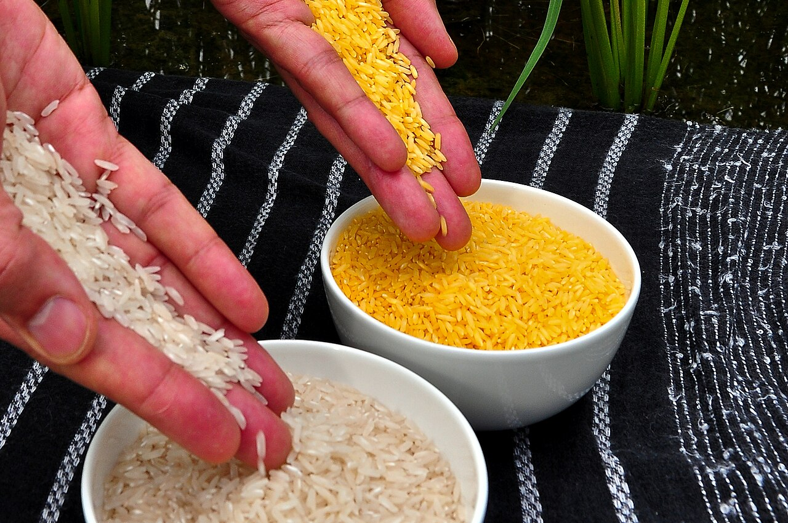

基因工程的应用
本期导读
农牧业 · 医药卫生 · 食品工业

视频原话 · 导读3 句
- 同学们好！这节课梳理人教版选择性必修三第三章第三节——基因工程的应用。7.9s
- 高考常考转基因抗虫植物的原理、乳腺生物反应器的构建，以及工程菌生产药物。7.8s
- 我们按六个考点梳理，每个考点都讲清楚怎么考、怎么做。5.5s
抗虫抗病抗除草剂01#
抗虫
转入 Bt 抗虫蛋白基因等
害虫取食后消化系统被破坏
例：转基因抗虫棉
害虫取食后消化系统被破坏
例：转基因抗虫棉
抗病
转入抗病毒、抗真菌的基因
如病毒外壳蛋白基因
如病毒外壳蛋白基因
抗除草剂
转入抗除草剂基因
作物不受伤害，杂草被清除
作物不受伤害，杂草被清除
易错
Bt 蛋白只对特定的害虫有毒，对人畜无害；长期种植可能使害虫产生抗性，要合理种植
视频原话5 句
- 考点一，在农牧业方面的应用：培育抗虫、抗病、抗除草剂的转基因植物。7.4s
- 抗虫：转入Bt抗虫蛋白基因等，害虫取食后，抗虫蛋白破坏其消化系统，比如我国的转基因抗虫棉。10.2s
- 抗病：转入抗病毒、抗真菌的基因，比如病毒外壳蛋白基因，培育抗病植物。7.8s
- 抗除草剂：转入抗除草剂基因，作物不受除草剂伤害，杂草被清除。7.1s
- 易错：Bt抗虫蛋白只对特定的害虫有毒，对人和畜无害；长期种植可能使害虫产生抗性，要合理种植。10.8s
改良品质与生长02#
| 转基因生物 | 转入的基因 | 获得的性状 |
|---|---|---|
| 黄金大米 | 合成 β-胡萝卜素的相关基因 | 胚乳富含 β-胡萝卜素 |
| 奶牛 | 肠乳糖酶基因 | 乳汁中乳糖含量大大降低 |
| 鲤鱼等 | 外源生长激素基因 | 生长速度明显加快 |
解题方法
先看转入的是什么基因、想得到什么性状，就能判断属于哪一类应用
视频原话4 句
- 考点二，改良农产品的品质、提高动物的生长速度。比如“黄金大米”，转入相关基因后，胚乳中富含β-胡萝卜素。11.1s
- 转入肠乳糖酶基因的奶牛，乳汁中乳糖含量大大降低，适合乳糖不耐受的人群。7.8s
- 转入外源生长激素基因的鲤鱼等，生长速度明显加快。5.2s
- 解题方法：判断应用类型，先看转入的是什么基因、想得到什么性状，就能对号入座。8.1s
乳腺生物反应器03#
三个关键：乳腺特异性启动子 · 受体细胞是受精卵 · 雌性泌乳期从乳汁中提取
易错
目的基因存在于转基因动物的所有体细胞中，但只在乳腺细胞中表达（乳腺特异性启动子）
视频原话5 句
- 考点三，在医药卫生领域的应用：乳腺生物反应器，也叫乳房生物反应器。7.2s
- 构建：将药用蛋白基因与乳腺中特异表达的基因的启动子等调控元件重组在一起。7.9s
- 通过显微注射等方法，导入哺乳动物的受精卵中。4.7s
- 受精卵发育成转基因动物，进入泌乳期后，通过分泌的乳汁来生产所需要的药物。7.8s
- 易错：目的基因存在于转基因动物的所有体细胞中，但只在乳腺细胞中表达，因为用的是乳腺特异性启动子。10.0s
工程菌与器官移植04#
基因工程菌
药用蛋白基因导入大肠杆菌、酵母菌等
生产胰岛素、干扰素、白细胞介素、溶血栓剂、乙肝疫苗等
生产胰岛素、干扰素、白细胞介素、溶血栓剂、乙肝疫苗等
移植器官工厂
在供体基因组中导入调节因子，抑制抗原决定基因的表达，或除去抗原决定基因
再结合克隆技术 → 无免疫排斥的转基因克隆猪器官
再结合克隆技术 → 无免疫排斥的转基因克隆猪器官
解题方法
蛋白质需要加工修饰（如糖基化），就选有内质网、高尔基体的酵母菌，而不是大肠杆菌
视频原话4 句
- 考点四，基因工程菌生产药物。把药用蛋白基因导入大肠杆菌、酵母菌等微生物，构建工程菌。9.6s
- 可以生产胰岛素、干扰素、白细胞介素、溶血栓剂、乙肝疫苗等。6.6s
- 建立移植器官工厂：在器官供体的基因组中导入某种调节因子，抑制抗原决定基因的表达，或设法除去抗原决定基因，再结合克隆技术，培育没有免疫排斥反应的转基因克隆猪器官。16.8s
- 考法：工程菌选大肠杆菌还是酵母菌？解题方法：蛋白质需要加工修饰，比如糖基化，就选有内质网、高尔基体的酵母菌。12.2s
食品工业中的应用05#
食品工业用酶
如生产奶酪用的凝乳酶
食品添加剂
氨基酸、维生素等
优点（与从动物组织中提取相比）
产量高、成本低，不受原料来源的限制
解题方法
答优点时，从产量、成本、原料三个角度作答
视频原话4 句
- 考点五，在食品工业方面的应用。利用基因工程菌生产食品工业用酶，比如生产奶酪用的凝乳酶。10.1s
- 还可以生产氨基酸、维生素等食品添加剂。4.4s
- 与从动物组织中提取相比，工程菌生产产量高、成本低，而且不受原料来源的限制。8.2s
- 解题方法：答优点时，从“产量、成本、原料”三个角度作答。6.1s
乳腺与膀胱反应器06#
| 比较项目 | 乳腺生物反应器 | 膀胱生物反应器 |
|---|---|---|
| 受体细胞 | 受精卵 | 受精卵 |
| 启动子 | 乳腺蛋白基因的启动子 | 膀胱上皮细胞特异表达基因的启动子 |
| 产物来源 | 乳汁 | 尿液 |
| 限制 | 只能是雌性，且要到泌乳期 | 不受性别和年龄限制 |
易错
两者区别在于启动子和产物来源；受体细胞都是受精卵，不是乳腺细胞或膀胱细胞
视频原话4 句
- 考点六，乳腺生物反应器与膀胱生物反应器的比较。两者的受体细胞都是受精卵。8.2s
- 乳腺生物反应器：用乳腺蛋白基因的启动子，从乳汁中提取，只能是雌性个体，而且要到泌乳期。9.2s
- 膀胱生物反应器：用在膀胱上皮细胞中特异表达的基因的启动子，从尿液中提取，不受性别和年龄的限制。10.1s
- 易错：两种反应器的区别在于启动子不同、产物来源不同；受体细胞都是受精卵，不是乳腺细胞或膀胱细胞。10.6s
易错速查✓
先自己判断，再点按钮查看对错与解析。
- 1转基因抗虫棉对所有害虫都有抗性说法错误：Bt蛋白只对特定害虫有毒
- 2乳腺生物反应器要用乳腺蛋白基因的启动子说法正确。
- 3乳腺生物反应器的受体细胞是乳腺细胞说法错误：受体细胞是受精卵
- 4大肠杆菌可作为生产胰岛素的工程菌说法正确。
- 5雄性转基因动物也能用乳腺生物反应器生产药物说法错误：只有雌性泌乳期才能分泌
- 6膀胱生物反应器不受性别和年龄的限制说法正确。
乳腺看启动子，受体选受精卵！
视频原话 · 易错速查5 句
- 最后，用六道判断题检验一下。3.6s
- 判断一：转基因抗虫棉对所有害虫都有抗性？错。判断二：乳腺生物反应器要用乳腺蛋白基因的启动子？对。12.0s
- 判断三：乳腺生物反应器的受体细胞是乳腺细胞？错，是受精卵。判断四：大肠杆菌可作生产胰岛素的工程菌？对。12.8s
- 判断五：雄性转基因动物也能用乳腺生物反应器生产药物？错。判断六：膀胱生物反应器不受性别和年龄限制？对。12.8s
- 六个考点串成一条线：乳腺看启动子，受体选受精卵。我们下期再见！7.3s
图片来源
图片来源：Wikimedia Commons —— International Rice Research Institute (IRRI)《Golden Rice》CC BY 2.0
Photo: International Rice Research Institute (IRRI), CC BY 2.0